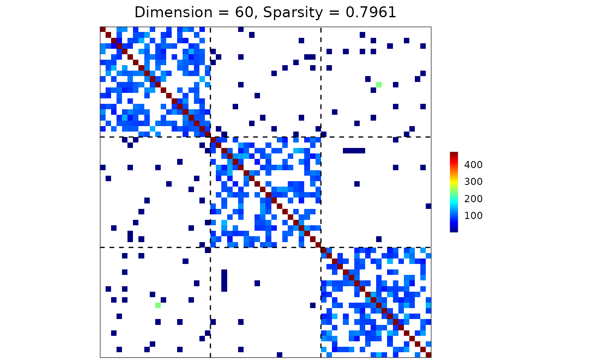
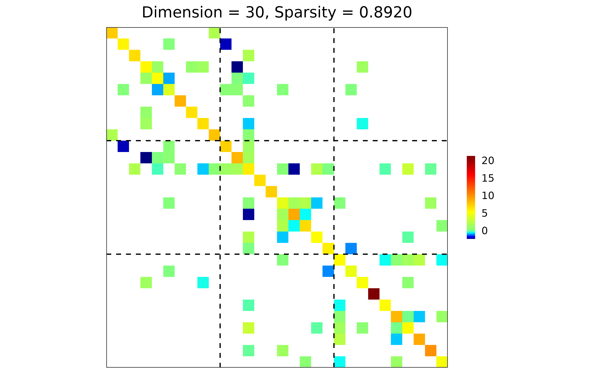

Provide a collection of statistical methods that incorporate both element-wise and group-wise penalties to estimate a precision matrix.
Usage
grasps(
X,
n = nrow(X),
membership,
penalty,
diag.ind = TRUE,
diag.grp = TRUE,
diag.include = FALSE,
lambda = NULL,
alpha = NULL,
gamma = NULL,
nlambda = 10,
lambda.min.ratio = 0.01,
growiter.lambda = 30,
tol.lambda = 0.001,
maxiter.lambda = 50,
rho = 2,
tau.incr = 2,
tau.decr = 2,
nu = 10,
tol.abs = 1e-04,
tol.rel = 1e-04,
maxiter = 10000,
crit = "BIC",
kfold = 5,
ebic.tuning = 0.5
)Arguments
- X
An \(n \times d\) data matrix with sample size \(n\) and dimension \(d\).
A \(d \times d\) sample covariance matrix with dimension \(d\).
- n
An integer (default =
nrow(X)) specifying the sample size. This is only required when the input matrixXis a \(d \times d\) sample covariance matrix with dimension \(d\).- membership
An integer vector specifying the group membership. The length of
membershipmust be consistent with the dimension \(d\).- penalty
A character string specifying the penalty for estimating precision matrix. Available options include:
"lasso": Least absolute shrinkage and selection operator (Tibshirani 1996; Friedman et al. 2008) .
"adapt": Adaptive lasso (Zou 2006; Fan et al. 2009) .
"atan": Arctangent type penalty (Wang and Zhu 2016) .
"exp": Exponential type penalty (Wang et al. 2018) .
"lq": Lq penalty (Frank and Friedman 1993; Fu 1998; Fan and Li 2001) .
"lsp": Log-sum penalty (Candès et al. 2008) .
"mcp": Minimax concave penalty (Zhang 2010) .
"scad": Smoothly clipped absolute deviation (Fan and Li 2001; Fan et al. 2009) .
- diag.ind
A logical value (default = TRUE) specifying whether to penalize the diagonal elements.
- diag.grp
A logical value (default = TRUE) specifying whether to penalize the within-group blocks.
- diag.include
A logical value (default = FALSE) specifying whether to include the diagonal entries in the penalty for within-group blocks when
diag.grp = TRUE.- lambda
A non-negative numeric vector specifying the grid for the regularization parameter. The default is
NULL, which generates its ownlambdasequence based onnlambdaandlambda.min.ratio.- alpha
A numeric vector in [0, 1] specifying the grid for the mixing parameter balancing the element-wise individual L1 penalty and the block-wise group L2 penalty. An alpha of 1 corresponds to the individual penalty only; an alpha of 0 corresponds to the group penalty only. The default value is a sequence from 0.1 to 0.9 with increments of 0.1.
- gamma
A numeric value specifying the additional parameter fo the chosen
penalty. The default value depends on the penalty:"adapt": 0.5
"atan": 0.005
"exp": 0.01
"lq": 0.5
"lsp": 0.1
"mcp": 3
"scad": 3.7
- nlambda
An integer (default = 10) specifying the number of
lambdavalues to generate whenlambda = NULL.- lambda.min.ratio
A numeric value > 0 (default = 0.01) specifying the fraction of the maximum
lambdavalue \(\lambda_{max}\) to generate the minimumlambda\(\lambda_{min}\). Iflambda = NULL, alambdagrid of lengthnlambdais automatically generated on a log scale, ranging from \(\lambda_{max}\) down to \(\lambda_{min}\).- growiter.lambda
An integer (default = 30) specifying the maximum number of exponential growth steps during the initial search for an admissible upper bound \(\lambda_{\max}\).
- tol.lambda
A numeric value > 0 (default = 1e-03) specifying the relative tolerance for the bisection stopping rule on the interval width.
- maxiter.lambda
An integer (default = 50) specifying the maximum number of bisection iterations in the line search for \(\lambda_{\max}\).
- rho
A numeric value > 0 (default = 2) specifying the ADMM augmented-Lagrangian penalty parameter (often called the ADMM step size). Larger values typically put more weight on enforcing the consensus constraints at each iteration; smaller values yield more conservative updates.
- tau.incr
A numeric value > 1 (default = 2) specifying the multiplicative factor used to increase
rhowhen the primal residual dominates the dual residual in ADMM.- tau.decr
A numeric value > 1 (default = 2) specifying the multiplicative factor used to decrease
rhowhen the dual residual dominates the primal residual in ADMM.- nu
A numeric value > 1 (default = 10) controlling how aggressively
rhois rescaled in the adaptive-rhoscheme (residual balancing).- tol.abs
A numeric value > 0 (default = 1e-04) specifying the absolute tolerance for ADMM stopping (applied to primal/dual residual norms).
- tol.rel
A numeric value > 0 (default = 1e-04) specifying the relative tolerance for ADMM stopping (applied to primal/dual residual norms).
- maxiter
An integer (default = 1e+04) specifying the maximum number of ADMM iterations.
- crit
A character string (default = "BIC") specifying the parameter selection criterion to use. Available options include:
"AIC": Akaike information criterion (Akaike 1973) .
"BIC": Bayesian information criterion (Schwarz 1978) .
"EBIC": extended Bayesian information criterion (Chen and Chen 2008; Foygel and Drton 2010) .
"HBIC": high dimensional Bayesian information criterion (Wang et al. 2013; Fan et al. 2017) .
"CV": k-fold cross validation with negative log-likelihood loss.
- kfold
An integer (default = 5) specifying the number of folds used for
crit = "CV".- ebic.tuning
A numeric value in [0, 1] (default = 0.5) specifying the tuning parameter to calculate for
crit = "EBIC".
Value
An object with S3 class "grasps" containing the following components:
- hatOmega
The estimated precision matrix.
- lambda
The optimal regularization parameter.
- alpha
The optimal mixing parameter.
- initial
The initial estimate of
hatOmegawhen a non-convex penalty is chosen viapenalty.- gamma
The optimal addtional parameter when a non-convex penalty is chosen via
penalty.- iterations
The number of ADMM iterations.
- lambda.grid
The actual lambda grid used in the program.
- alpha.grid
The actual alpha grid used in the program.
- lambda.safe
The bisection-refined upper bound \(\lambda_{\max}\), corresponding to
alpha.grid, whenlambda = NULL.- loss
The optimal k-fold loss when
crit = "CV".- CV.loss
Matrix of CV losses, with rows for parameter combinations and columns for CV folds, when
crit = "CV".- score
The optimal information criterion score when
critis set to"AIC","BIC","EBIC", or"HBIC".- IC.score
The information criterion score for each parameter combination when
critis set to"AIC","BIC","EBIC", or"HBIC".- membership
The group membership.
References
Akaike H (1973).
“Information Theory and an Extension of the Maximum Likelihood Principle.”
In Petrov BN, Csáki F (eds.), Second International Symposium on Information Theory, 267–281.
Akad\'emiai Kiad\'o, Budapest, Hungary.
Candès EJ, Wakin MB, Boyd SP (2008).
“Enhancing Sparsity by Reweighted \(\ell_1\) Minimization.”
Journal of Fourier Analysis and Applications, 14(5), 877–905.
doi:10.1007/s00041-008-9045-x
.
Chen J, Chen Z (2008).
“Extended Bayesian Information Criteria for Model Selection with Large Model Spaces.”
Biometrika, 95(3), 759–771.
doi:10.1093/biomet/asn034
.
Fan J, Feng Y, Wu Y (2009).
“Network Exploration via the Adaptive LASSO and SCAD Penalties.”
The Annals of Applied Statistics, 3(2), 521–541.
doi:10.1214/08-aoas215
.
Fan J, Li R (2001).
“Variable Selection via Nonconcave Penalized Likelihood and its Oracle Properties.”
Journal of the American Statistical Association, 96(456), 1348–1360.
doi:10.1198/016214501753382273
.
Fan J, Liu H, Ning Y, Zou H (2017).
“High Dimensional Semiparametric Latent Graphical Model for Mixed Data.”
Journal of the Royal Statistical Society Series B: Statistical Methodology, 79(2), 405–421.
doi:10.1111/rssb.12168
.
Foygel R, Drton M (2010).
“Extended Bayesian Information Criteria for Gaussian Graphical Models.”
In Lafferty J, Williams C, Shawe-Taylor J, Zemel R, Culotta A (eds.), Advances in Neural Information Processing Systems 23 (NIPS 2010), 604–612.
Frank LE, Friedman JH (1993).
“A Statistical View of Some Chemometrics Regression Tools.”
Technometrics, 35(2), 109–135.
doi:10.1080/00401706.1993.10485033
.
Friedman J, Hastie T, Tibshirani R (2008).
“Sparse Inverse Covariance Estimation with the Graphical Lasso.”
Biostatistics, 9(3), 432–441.
doi:10.1093/biostatistics/kxm045
.
Fu WJ (1998).
“Penalized Regressions: The Bridge versus the Lasso.”
Journal of Computational and Graphical Statistics, 7(3), 397–416.
doi:10.1080/10618600.1998.10474784
.
Schwarz G (1978).
“Estimating the Dimension of a Model.”
The Annals of Statistics, 6(2), 461–464.
doi:10.1214/aos/1176344136
.
Tibshirani R (1996).
“Regression Shrinkage and Selection via the Lasso.”
Journal of the Royal Statistical Society: Series B (Methodological), 58(1), 267–288.
doi:10.1111/j.2517-6161.1996.tb02080.x
.
Wang L, Kim Y, Li R (2013).
“Calibrating Nonconvex Penalized Regression in Ultra-High Dimension.”
The Annals of Statistics, 41(5), 2505–2536.
doi:10.1214/13-AOS1159
.
Wang Y, Fan Q, Zhu L (2018).
“Variable Selection and Estimation using a Continuous Approximation to the \(L_0\) Penalty.”
Annals of the Institute of Statistical Mathematics, 70(1), 191–214.
doi:10.1007/s10463-016-0588-3
.
Wang Y, Zhu L (2016).
“Variable Selection and Parameter Estimation with the Atan Regularization Method.”
Journal of Probability and Statistics, 2016, 6495417.
doi:10.1155/2016/6495417
.
Zhang C (2010).
“Nearly Unbiased Variable Selection under Minimax Concave Penalty.”
The Annals of Statistics, 38(2), 894–942.
doi:10.1214/09-AOS729
.
Zou H (2006).
“The Adaptive Lasso and Its Oracle Properties.”
Journal of the American Statistical Association, 101(476), 1418–1429.
doi:10.1198/016214506000000735
.
Examples
library(grasps)
## reproducibility for everything
set.seed(1234)
## block-structured precision matrix based on SBM
sim <- gen_prec_sbm(d = 60, K = 3,
within.prob = 0.5, between.prob = 0.05,
weight.dists = list("gamma", "unif"),
weight.paras = list(c(shape = 20, scale = 5), c(min = 0, max = 1)),
cond.target = 100)
## visualization
plot(sim)

## n-by-d data matrix
library(MASS)
X <- mvrnorm(n = 30, mu = rep(0, 60), Sigma = sim$Sigma)
## lasso, BIC
res <- grasps(X = X, membership = sim$membership, penalty = "lasso", crit = "BIC")
## visualization
plot(res)
